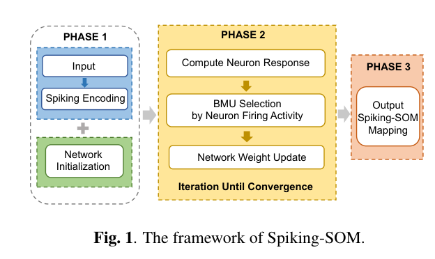
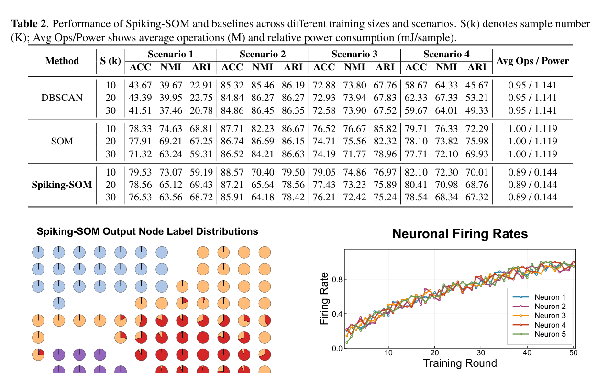

Paper Story · ICASSP 2026 · CCF-B · Oral
Spiking self-organizing maps for radar deinterleaving
Spiking Self-Organizing Maps with Convergence Guarantees for Unsupervised Radar Signal Deinterleaving
ICASSP 2026 - 2026 IEEE International Conference on Acoustics, Speech and Signal Processing (ICASSP), 19532-19536 (2026)
Research question
Radar deinterleaving must handle unknown labels, dense pulses, and limited edge computation, while conventional SOMs rely on continuous-domain distance computation.
Core method
Spiking-SOM represents SOM units with LIF neurons, encodes PDW inputs as sparse spike tensors, selects BMUs by average firing rate, and updates weights in the spike domain with convergence analysis based on Robbins-Monro conditions.
Method steps
- Spike encoding
Encode PDW features into sparse temporal spike tensors.
- Neuron response
Accumulate membrane potential and firing responses in LIF units.
- BMU selection
Select the best matching unit by average firing rate.
- Topology update
Update BMU and neighborhood weights in the spike domain.
Main finding
Section 2.3 analyzes the winning unit: for a fixed sparse input, its matching response does not decrease after the update. The paper establishes weight convergence under the Robbins–Monro learning-rate conditions in Eq. (10).
Scope and conditions
The convergence analysis applies to the stated update rule and learning-rate conditions. The deinterleaving experiments in Section 3 evaluate task performance separately.
Figures


Spiking SOM Deinterleaving Framework
None · The framework shows how BMU competition, spike responses and cluster updates form an unsupervised radar-pulse deinterleaving process.
It transfers SOM-style neighborhood competition into the spiking domain for event-driven sequence separation.
Source: ICASSP 2026 - 2026 IEEE International Conference on Acoustics, Speech and Signal Processing (ICASSP), 19532-19536 (2026). © 2026 IEEE.
Figure reuse rights pending


Multi-Scenario Performance Table
None · The table compares deinterleaving metrics under different pulse densities, distributions and overlap conditions.
The key result is that the model preserves useful clustering quality without supervised labels.
Source: ICASSP 2026 - 2026 IEEE International Conference on Acoustics, Speech and Signal Processing (ICASSP), 19532-19536 (2026). © 2026 IEEE.
Figure reuse rights pending
Why it matters
Moving competition and updates into the spike domain provides a method for studying event-driven computation and sparse learning in unsupervised deinterleaving.